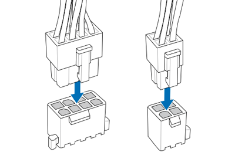
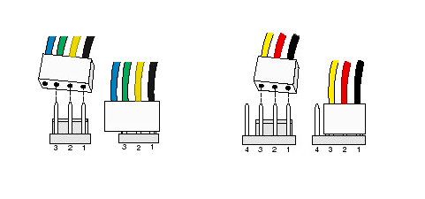
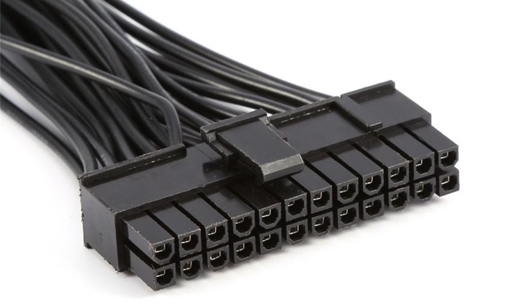
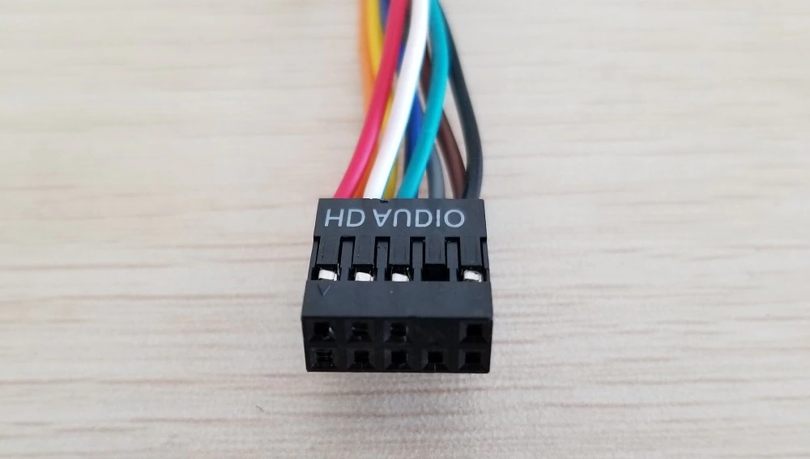
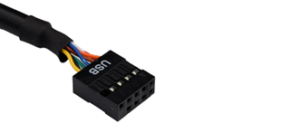
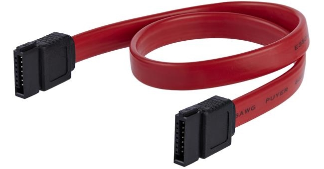
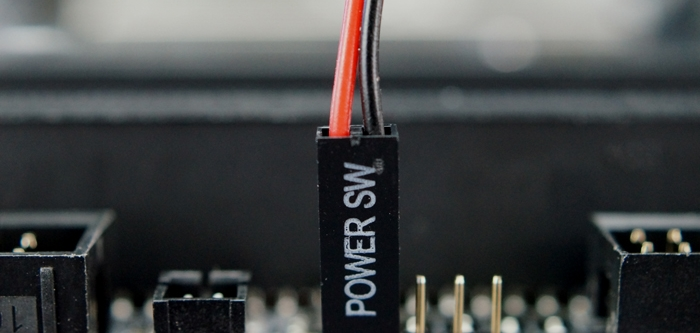

ALIMENTAZIONE CPU

Questo cavo, composto da 4 o 8 pin, si occupa dell'alimentazione della Cpu. Non vi è alcuna indicazione particolare se non che per la
rimozione è necessario applicare una pressione sulla levetta posta su questo, come visibile in figura. Nel caso il cavo in dotazione
possieda 4 pin ma il connettore sulla scheda ne possieda 8, si può tranquilamente inserire questo nei primi 4 liberi, anche senza
serversi di un adattatore.
ALIMENTAZIONE VENTOLE

Questo cavo, composto da 3 o 4 pin, si occupa dell'alimentazione delle varie ventole del pc e del dissipatore della Cpu. L'alimentazione di quest'ultima,
di forma medesima, viene identificata di solito con la scritta CPU_FAN stampata sulla scheda madre, mentre le altre riporteranno
la scritta CHA_FAN (Chassis Fan). Nel caso il dissipatore sia a liquido, il radiatore di quest'ultimo va inserito sotto CPU_FAN.
ALIMENTAZIONE DELLA SCHEDA MADRE

Questo cavo, composto solitamente da 24 o 20+4 pin, alimenta la scheda madre e a sua volta i componenti la cui alimentazione derivi da questa, come la cpu e le ventole.
Partircolarmente duro da estrarre, è necessario applicare una pressione sulla levetta posta a lato, durante l'estrazione è anche normale che la scheda madre si possa piegare.
Questo grosso cavo, solitamente tenuto insieme da una fascetta o da una maglia di plastica, fuoriesce solitamente dall'alimentatore,
nel caso invece questo sia modulare vi va collegato l'altro capo del cavo.
CONNETTORE USB 3.0
Questo connettore fa riferimento alle porte usb 3.0 (identificabili per il colore azzurro o verde-acqua) presenti nella parte frontale del case. I connettori 3.0 della parte
posteriore invece sono saldati direttamente alla scheda madre. Il cavo è composto di 20 pin, non vi sono particolari indicazioni per l'istallazione o la rimozione.
CONNETTORE AUDIO

Questo connettore, identificato dalla scritta HD AUDIO, fuoriesce dalla parte frontale del case ed è composto da 7 pin come mostrato in figura.
Il fatto che i pin siano posizionati in modo asimetrico garantisce l'univocità del verso in cui va inserito.
Non vi sono particolari indicazioni per l'istallazione o la rimozione.
CONNETTORE USB 2.0

Questo connettore fa riferimento alle porte usb 2.0 (identificabili per il colore grigio o nero) presenti nella parte frontale del case. I connettori 2.0 della parte
posteriore invece sono saldati direttamente alla scheda madre. Il cavo è composto di 9 pin e viene identificato dalla scritta USB, presenta i pin posizionati in modo asimetrico
in modo da garantire l'univocità del verso in cui va inserito. Questo, può essere connesso a uno qualsiasi dei connettori da 9 pin presenti sulla scheda madre.
CONNETTORE SATA

Questo connettore, caratterizzato dalla forma a "L", connette la scheda madre agli HDD/SSD installati. Un capo va inserito nella scheda madre mentre
l'altro nel medesimo connettore sul disco rigido. Alcuni presentano una piccola levetta da premere per consentire la rimozione.
CONNETTORI DEL CASE

Questi connettori, spesso intrecciati tra loro, fuoriescono dalla parte frontale del case e si occupano del collegamento dei tasti nella parte frontale. Lo schema con cui vanno inseriti
è solitamente stampato sulla scheda madre. Se quest'ultima è partircolarmente datata e non lo riporta, si può procedere a tentativi connettendo manualmente i connettore mediante,
per esempio, la punta di un cacciavite. I connettori, non sempre tutti presenti, sono:
1) POW LED +/-: questi due connettori rappresentano il polo positivo e negativo per il LED del tasto di accensione.
2) POW SW: questo individua il tasto di accensione.
3) HD LED +/-: indiduano polo positivo e negativo del LED relativo alla presenza di un HDD collegato.
4) RESET SW: individua il tasto di reset.
I connettori vanno posizionati con la scritta rivolta verso il basso.